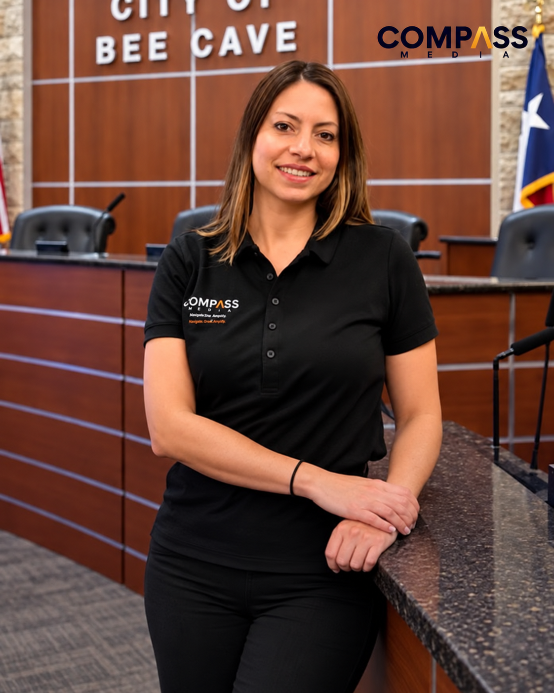
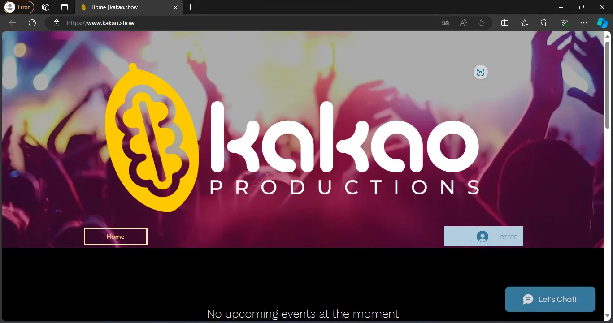

Food & hospitalityView reel ↗
Austin creative agency · English / Español
Sharp strategy.
Social people watch.
Brands that grow.
We are Compass Media—an Austin agency writing, designing and producing the work that moves local and national brands forward.
Start a conversation


We are
Compass Media
A creative agency built for the whole journey.
Strategy, social media, paid campaigns, brand identity, video and web—connected by one team and one clear direction.
What we do
We turn a brand's real strengths into stories people can understand, content they want to spend time with and digital experiences that make the next step feel obvious.

Real work. Real motion.
Content made to be seen.
Live-action work from Compass—produced for the way people actually watch, scroll and decide.
Brand & Web
Positioning, naming, visual identity and websites that make the business easier to recognize, understand and trust.
Explore brand servicesSocial & Content
Strategy, concepts, channel management and production built around useful stories—not filler for the feed.
Explore social servicesAds & Video
Campaign creative, paid distribution and video production that work together from the first idea through optimization.
Explore campaign servicesSelected case work
The work
Every brand gets its own visual world. The goal is not to repeat our style—it is to make their story unmistakable.

Kakao Productions
Identity · Entertainment · Web


Small team.
Wide view.
Women-led, bilingual and Austin-born. Since 2017, Compass has helped businesses connect strategic thinking to hands-on creative execution.
Meet CompassGood to know
FAQs
Can Compass manage strategy and production?
Yes. The team can define the direction, build the campaign or content system, produce the work and support ongoing execution.
Do you work with brands outside Austin?
Yes. Compass partners with both local and national brands while maintaining its home base in Austin, Texas.
Can you create content in English and Spanish?
Yes. Compass is bilingual and can develop brand communication and content for English- and Spanish-speaking audiences.
Can we begin with one project?
Absolutely. Start with a brand identity, campaign, video or website—or bring Compass in as an ongoing creative partner.